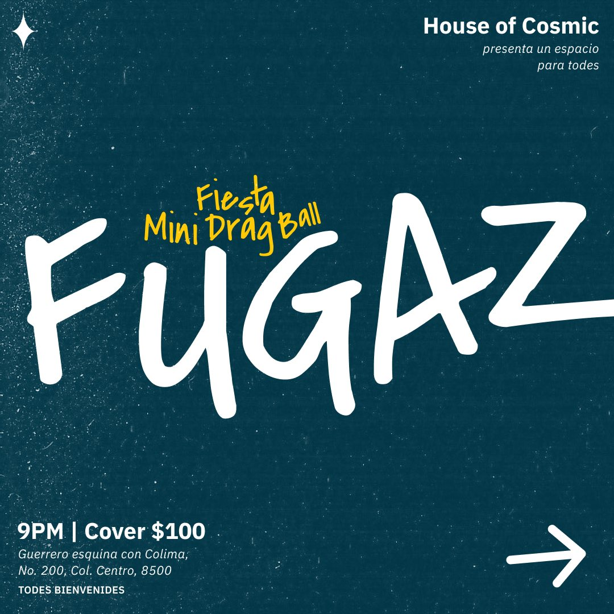
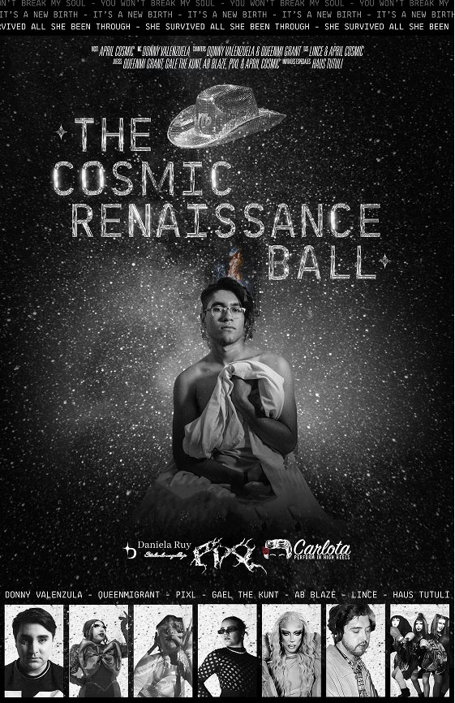
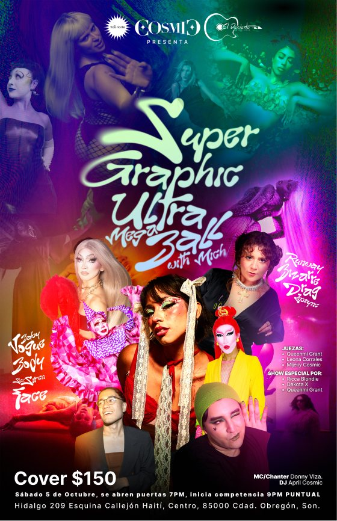
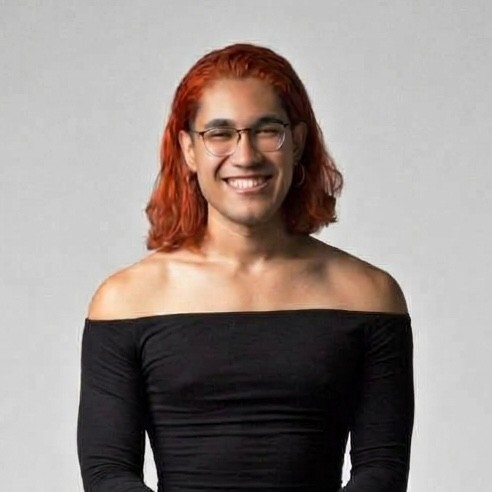

El servicio completo
De inicio a fin
Nos encargamos de todo: desde que el proyecto es una idea hasta que sucede. Concepto, campaña, contenido, producción y ejecución, con una sola persona al frente que conoce el proyecto completo.
Agencia productora · Ciudad Obregón, Sonora
Materializando ideas
Estudio de comunicación y producción dirigido por April Cosmic. Trabajamos por proyecto: eventos, campañas, podcasts y contenido audiovisual. Te ayudamos en una parte o llevamos el proyecto completo, desde que es una idea hasta que existe.
Cómo trabajamos
Pensamos y hacemos en el mismo lugar. No tienes que coordinar a un estratega, un diseñador, un videógrafo y alguien de logística por separado, ni explicar tu idea cinco veces.
La parte de agencia
Pensamos
Entendemos qué quieres decir, a quién y para qué. Aterrizamos la idea y decidimos cómo comunicarla.
La parte de productora
Materializamos
Lo convertimos en algo real: contenido, foto, video, audio, un evento con gente adentro.
Partimos de lo que traes, aunque sea una intuición.
Le damos forma: concepto, mensaje, público, alcance.
Definimos cómo se va a contar y en qué canales.
Lo ejecutamos y lo llevamos hasta el final.
Servicios
Cada proyecto necesita algo distinto. Puedes contratar solo lo que te falta o dejarnos todo el proceso.
El servicio completo
Nos encargamos de todo: desde que el proyecto es una idea hasta que sucede. Concepto, campaña, contenido, producción y ejecución, con una sola persona al frente que conoce el proyecto completo.
Pensar
Para cuando tienes una idea pero no sabes cómo aterrizarla o cómo contarla.
Contar
Para un evento, lanzamiento o temporada con fecha de inicio y de cierre.
Hacer
Para cuando necesitas que algo se vea y se escuche bien.
Hacer
Para cuando el diseño ya está y necesitas que alguien lo haga pasar.
Precios
Todos los servicios se cotizan según el proyecto.
Lo que no hacemos
Proyectos
Cada caso cuenta la idea, cómo se comunicó y qué pasó, no solo cómo se vio.
Eventos culturales · De inicio a fin
Tres competencias de danza freestyle LGBTQIA+ en Ciudad Obregón. Ninguna se pensó como un evento para vender entradas: cada una se concibió como una historia con algo que decir, y esa historia se contó en cada punto de contacto con el público, desde el logo y la campaña hasta la decoración y las bebidas temáticas de la noche.
El ballroom es una subcultura de nicho en Sonora, y aun así los balls reunieron hasta 150 personas, con asistentes que viajaron desde Navojoa, Guaymas, Hermosillo y hasta Nogales.

I La introducción
El primer ball no contaba una historia propia: su historia era el ballroom mismo. Se diseñó para llevar de la mano a un público que nunca había visto un ball y aprender junto con él qué es esta cultura, cómo funciona una competencia y qué significa cada categoría.

II Un renacer
La historia de una persona trans que renace bajo su verdadera identidad a través de la música. Tomó como inspiración y contraparte el álbum Renaissance de Beyoncé, y lo convirtió en un renacer queer: individual para la protagonista y colectivo para quienes estuvieron ahí.

III Una cápsula del tiempo
Un retrato de la escena pop del momento. Cada categoría giraba alrededor de un artista distinto, para dejar en la memoria colectiva una fotografía de lo que esos artistas provocaron en su público.

Podcast · Producción
Conversaciones sobre la escena local. El nombre original, ContraLocal, salió de CosmoMateria, y el cambio a UltraLocal se definió en conjunto con el equipo del show.
Diseñamos desde cero el plan de trabajo de la producción: grabación multicámara con audio e iluminación, foto de registro, edición de cada episodio y una campaña en redes por capítulo, desarrollada en colaboración con Tiempos Mejores, la organización sin fines de lucro que produce el podcast de forma ejecutiva.

Podcast · De inicio a fin
Un podcast de comedia hecho completo desde CosmoMateria: el nombre, la imagen, la grabación, la edición y la comunicación de cada episodio.

Nosotros
CosmoMateria lo dirige April Cosmic, comunicóloga y productora. Desde 2023 es fundadora y madre de House of Cosmic, la casa pionera de la escena ballroom en Sonora, donde organiza balls, talleres y conversatorios.
Para cada proyecto armamos el equipo con colaboradores de confianza según lo que se necesite. Tú tratas directo con quien conoce todo el proyecto.
El nombre
Cosmic + materia = CosmoMateria
Viene de materia cósmica. Lo que hace April Cosmic, su materia, es CosmoMateria. Por eso el lema: materializar ideas.
Contacto
Cuéntanos qué quieres hacer, para cuándo y qué parte necesitas. Te respondemos con una propuesta.